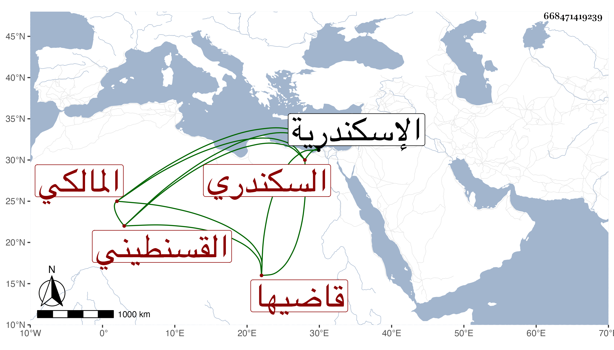

0902Sakhawi.DawLamic.ITO20230111-ara1.EIS1600.668471419239
Biography ID: 668471419239
912
سالم بن القاضي عفيف الدين محمد بن محمد الزين أبو النجا القسنطيني السكندري قاضيها أبوه المالكي ويعرف بابن العفيف . أخذ عن الجمال عبد الله المشرقى والشمس النوبي باسكندرية في العربية واشتغل يسيرا عند السنهوري وغيره ، وأخذ عني قليلا وأظنه قرأ البخاري على الشاوي ، وسمعت أنه تولع بالنظم وتجرأ على أشياء سيما في ولاية أبيه وعلى كل حال فهو أشبه منه وحج في سنة ثمان وثمانين ، وعاد في أول التي تليها مع الركب ويذكر بتمول .
